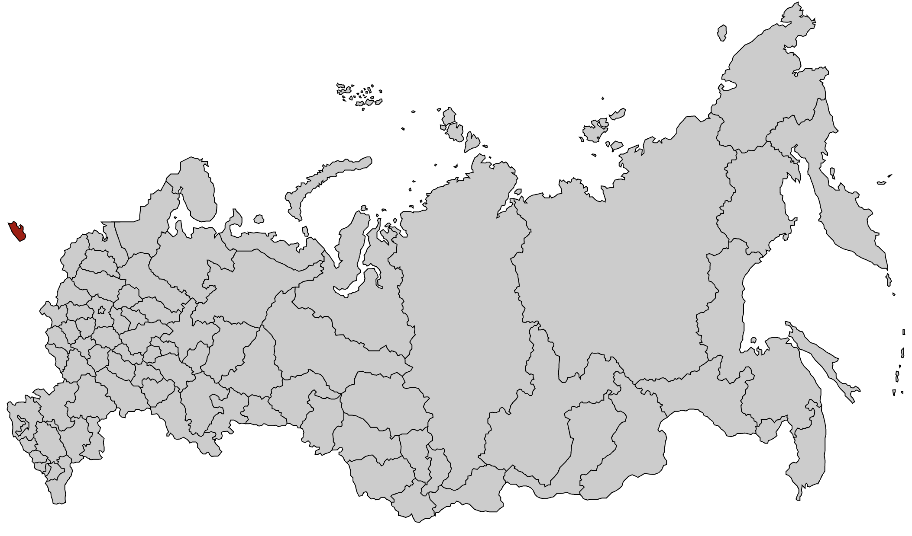

Сезон 2017 - Калининград
Место выезда

Нашивка

Командный состав
- Командир — Баранов Марк
- Комиссар — Ткач Никита
Бойцы
- Беляев Павел
- Волосович Юрий
- Глазырин Ярослав
- Горшков Алексей
- Еверзов Егор
- Захаров Кирилл
- Зверев Дмитрий
- Иванов Антон
- Ивасюк Арсений
- Караман Антон
- Кобелев Иван
- Курдин Валерий
- Лобарев Андрей
- Мальцев Сергей
- Николаев Виктор
- Писарев Вячеслав
- Селезнев Дмитрий
- Ченин Роман
- Шваркунов Николай
О сезоне
Работодатель: ООО «СК Строй-Монолит».
Объект: Стадион "Ростех Арена".
Виды работ: подсобные работы.
По инициативе комсостава, с помощью Вячеслава Писарева возродился старый отряд ССО «Данко». Комиссаром ССО «Данко» стала боец 2016-го года – Захарова София.
Фотоальбом